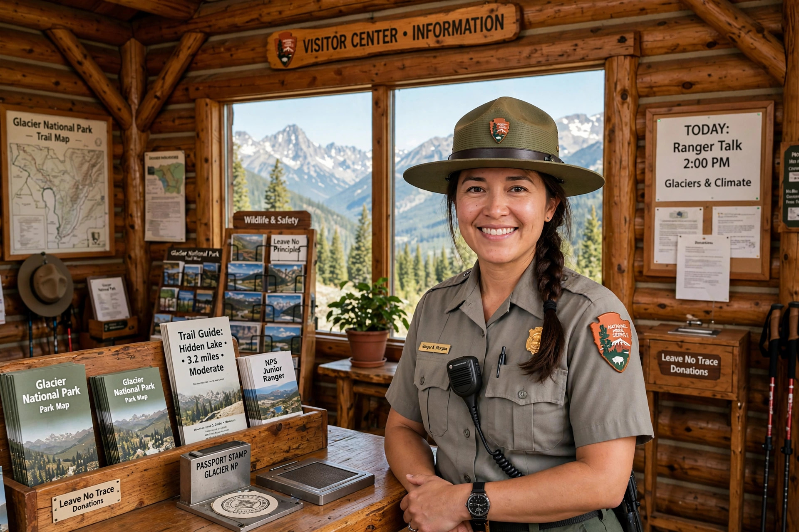

| National Park Service (NPS) | |
|---|---|
| Formed | 25 August 1916 |
| Jurisdiction | United States federal government |
| Headquarters | Washington, D.C. |
| Units managed | 400+ park units; 63 national parks |
The National Park Service (NPS) is an agency of the United States federal government that manages the country's national parks, monuments and other protected sites. Created by the Organic Act of 1916, signed by President Woodrow Wilson, it is charged with conserving "the scenery and the natural and historic objects and the wild life therein" for the enjoyment of future generations.

America's national parks had been managed piecemeal before 1916. The preservation campaign was championed by figures such as Theodore Roosevelt, John Muir and Horace Albright; the first director was Stephen Mather, a wealthy industrialist who built the agency's institutional identity. The Civilian Conservation Corps of the 1930s built much of the trail and visitor infrastructure still in use.
The NPS administers over 85 million acres, including 63 designated national parks (from Yellowstone, the first, to newer additions such as New River Gorge), plus national monuments, historic sites, battlefields, seashores and recreation areas. It also runs the National Register of Historic Places and the National Natural Landmarks programme.